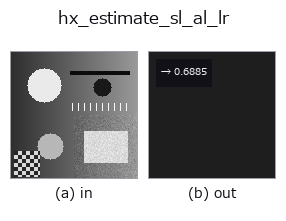

halcon_ext op• 데이터 종류: image → feature
• 호출: fullseye.apply(img, "hx_estimate_sl_al_lr", a=0.5, b=0.5)(2-D 는 이미지 1 장 + 스칼라 노브 2 개 a,b∈[0,1] 모델)
• HALCON 대응: estimate_sl_al_lr(의미·매개변수는 HALCON 레퍼런스가 참고가 됩니다)

*그림은 128×128 합성 입력에서 실제로 실행한 출력. 왼쪽이 입력, 오른쪽이 출력. 점군은 위에서 본 산점도(밝기 = z), 1-D 열은 꺾은선, 볼륨은 z 방향 최대값 투영, 동영상은 가운데 프레임, 복소 영상은 진폭이며, 그림이 되지 않는 반환값은 값 자체를 표시한다.*
*노브 a 는 출력을 바꾸지 않는다(실측: 0.1 / 0.5 / 0.9에서 동일).*
*노브 b 는 출력을 바꾸지 않는다(실측: 0.1 / 0.5 / 0.9에서 동일).*
Lee-Rosenfeld: 광원의 slant 를 추정(천정각, 0=정면 ~ pi/2=옆). [0,1] 정규화.
> 아래 상세 설명은 원문입니다 —— 요약과 제목은 번역되어 있습니다.
画像の平均輝度 `<I> を反射率 1 の Lambertian 面の関係 <I> = albedo * cos(slant)` に当てはめ、
`slant = arccos(<I>) を pi/2 で割った np.float64`(0〜1)で返す。0 が正面光(平均 1.0)、1 が真横
(平均 0)。
• `a, b` は未使用。
• 平均は [0,1] に clip してから `arccos` に渡すので範囲外にはならない。
実質「平均輝度が低いほど slant が大きい」という 1 対 1 の写像で、反射率は 1 と仮定している(暗い素材も
斜光と区別できない)。勾配で補正する版は `hx_estimate_sl_al_zc、反射率の代理値は hx_estimate_al_am`。
`hx_shade_height_field の仰角 b` と組み合わせて陰影を再現する際の目安に使う。
• gallery2d_halcon_ext 패밀리 가이드
• 샘플 데이터 카탈로그(DL URL / 라이선스) —— 2-D 는 skimage.data(BSD/public)+ 합성, 3-D 는 실데이터 소스(Stanford/PDS 등)의 DL URL.
• 연산자의 내력·참고문헌 —— 이 연산자 족의 바탕이 된 연구/기법의 출처.
• 알고리즘의 정전(저자·연도)과 용도는 위의 패밀리 사용 가이드에 적혀 있습니다.
아래 프로그램은 실제로 실행됨을 확인했습니다(그림과 같은 입력). Studio 도움말에서는 이 블록이 버튼이 되어 즉시 불러와 실행할 수 있습니다.
hx_estimate_sl_al_lr 0.50 0.50
▸ Load this pipeline · Load & run
• gallery2d_halcon_ext — py -3.11 examples/gallery2d_halcon_ext.py
feature 를 입력으로 받는 것)halcon_ext)hx_gen_circle · hx_gen_ellipse · hx_gen_rectangle2 · hx_gen_checker_region · hx_gen_grid_region · hx_gabor · hx_fit_surface1 · hx_fit_surface2
*Provenance: ops.py — 2D 연산자 레지스트리. 이 op 노트는 tools/opdocs.py md 가 자동 생성합니다(직접 편집하지 마세요).*
© 2026 Kazufumi Furuse — Fullseye operator documentation. Licensed under Apache-2.0.